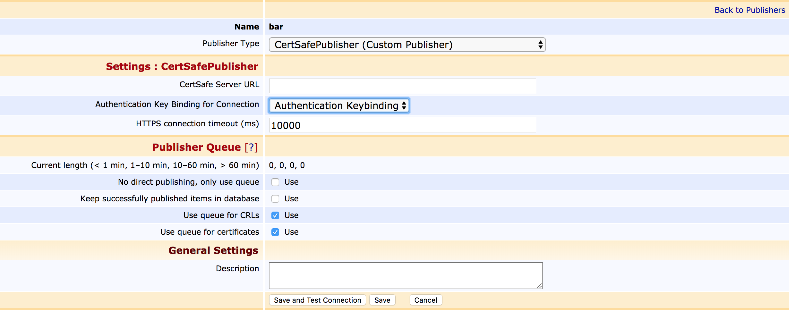

Cert Safe Publisher for an HTTPS Server
ENTERPRISE This is an EJBCA Enterprise feature.
The CertSafePublisher publishes certificate issuance and life cycle events (revoke and unrevoke) to a HTTPS server. The HTTPS request body is a JSON object with the fields: status, revocationReason and pem.

Example of the JSON object:
{ "status": "revoked", "revocationReason": "keyCompromise", "pem": "-----BEGIN CERTIFICATE-----\n MIIDWTCCAkGgAwIBAgIIAZmQ+6dVVfgwDQYJKoZIhvcNAQEFBQAwOzEVMBMGA1UE\n AwwMTWFuYWdlbWVudENBMRUwEwYDVQQKDAxFSkJDQSBTYW1wbGUxCzAJBgNVBAYT\n AlNFMB4XDTE0MDMwNDEwNTEyM1oXDTE2MDMwMzEwNTEyM1owETEPMA0GA1UEAwwG\n c3NsZm9vMIIBIjANBgkqhkiG9w0BAQEFAAOCAQ8AMIIBCgKCAQEA2nqbOm3ocTTm\n jU49UgP7ugnhg427zHaPdJjWuMt1ZopVzF/46EEsHIfxyGL59J3otgMEXXBJgJwC\n QuZgtqfByAgKIWvrgcxBhvkCe6NRjNAJv0DPaxsEJRqpQEFxV3Eo24eOpN+mxWIm\n 6h3N3vTgaaDBQTQMvcb3MndJDWte4+HoBwMtuJdfRapIjcCIkyfiNJKkS4NMvYGw\n G+lrReq4Za0Qhyqejjf4BB+QdE7xetZAtck9HAUlM28/zUuilPNeyftK7lR1Qcyp\n MxIYo6YI2mDbSDre7pr21srZB5lBdOP3dAb5B5MFZ7d4qqljygEb0HuUXedqu4pj\n 8e4VNtv7EwIDAQABo4GKMIGHMB0GA1UdDgQWBBR3QlV5l7AvnfNN7D6sILhjMNHs\n LTAMBgNVHRMBAf8EAjAAMB8GA1UdIwQYMBaAFMIAelgt0T0LdOBNNFKBKb5rcu4V\n MA4GA1UdDwEB/wQEAwIF4DAnBgNVHSUEIDAeBggrBgEFBQcDAQYIKwYBBQUHAwIG\n CCsGAQUFBwMEMA0GCSqGSIb3DQEBBQUAA4IBAQADfEI0DgJVBHe63YCC8AhLo+VX\n Fudi97WmCJGfHMx42HaaQvHtIvvpCw8TUZ08k49gUv+qtRlznaKFQb02DjbWgyeY\n TKuCwueiXhMIb7i4Af1+cMFrajBGOYrjYkbGGOwfyN8KcOrQxQk30vBf47DGRtX8\n 80fV12f1NWng1KD3ye7VcTnFQTkbwvZAT2aDQorqND8c7Pn8dEpPNnpP67EsLIvH\n biLb4qeaMa0pr21cE2LMV7ZhdyNbziiITB2oNsrdLIcKeTGKqmGSLDec6N0DPnmb\n NlJNaBcs77G2JSJfh908HEtaVqH+u5cKElV3pRSBbS9Z6DcAlwaC64G6tKs0\n -----END CERTIFICATE-----" } The revocationReason is optional.
To use the Cert Safe Publisher, select Edit Publishers in the Administration GUI, create a new publisher and edit it:
Publisher type: CertSafe Publisher
Class Path (not editable): org.ejbca.core.model.ca.publisher.CertSafePublisher
Properties of the publisher:
CertSafe Server URL: https://HOST:PORT/RELATIVE_PATH, for example https://certsafe.host.domain/PrimeKey/certificates.
Authentication Key Binding for Connection: Name of the Authentication Key Binding used to authenticate (TLS) against the CertSafe server.
HTTPS connection timeout: connection timeout (default 10s)
Create an Authentication Key Binding token to specify the parameters used to establish connection with the HTTPS server, see Internal Key Bindings Overview.
Click Save and Test Connection to save the entered information and validate that the entered configuration is correct. Select the publisher in the certificate profiles.
If an error occurs in the server, EJBCA can expect an error message sent inside a JSON object with the keyword error. The error message will be visible in the log file.
Example of the error JSON object:
{ "error": "An error message from the server.", } In order to avoid that certificates go missing in the CertSafe server if publishing fails (network down etc), it's recommended to configure a Publish Queue process service, as described below. For more information and full specification, refer to ECA-3437.